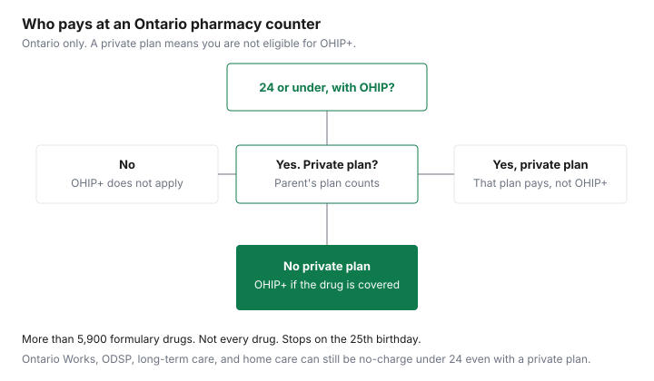

Healthcare · Canada
OHIP+ Explained: Free Prescriptions for Ontarians 24 and Under, and How Private Plans Change That
OHIP+ is Ontario's way of paying for eligible prescriptions for children and young adults who do not have a private drug plan. It is not a second payer behind a workplace plan, and it is not a card you apply for. The provincial page, updated 11 February 2026, says coverage is for anyone 24 or under who has OHIP and is not covered by a private plan. You bring a health card. The pharmacist may ask about private coverage. If the answer is no, a covered drug is filled at no charge. This page is that rule, for Ontario families. It is not medical advice. The prescriber chooses the drug. The formulary decides whether OHIP+ pays for it.
Key takeaways
- Eligible: 24 and under, OHIP coverage, no private plan. No enrolment. Coverage stops on the 25th birthday.
- A private plan, including a parent's workplace plan that covers the child, means the person is not eligible for OHIP+. The private plan is the payer. It is not "OHIP+ second."
- The basket is the Ontario Drug Benefit list: more than 5,900 drugs, plus Exceptional Access Program products when the person qualifies. Not every prescription.
- Ontario Works, ODSP, long-term care, home care, and Community Homes for Opportunity can still mean a no-charge fill for someone 24 or under even if a private plan exists. That is a different door into the Drug Benefit.
- Quebec's public plan and B.C. Fair PharmaCare are different systems. Do not use this page outside Ontario.
Who OHIP+ covers: Ontarians 24 and under with OHIP and no private plan
The learn-about-OHIP+ page states three tests. You are 24 years and under.
You have OHIP coverage. You are not covered by a private plan. You do not have to enrol or register. There is no separate OHIP+ card. At the pharmacy you provide the health card or the health card number. If there is no private plan, the page says the pharmacy fills a covered prescription at no charge.
The same page says OHIP+ was aimed at children and youth without private coverage. Parents follow three steps: a prescription from a doctor or nurse practitioner, the health card at any Ontario pharmacy, and a no-charge fill when the child is not on a private plan. The young adult follows the same steps alone. Prescriptions bought outside Ontario are not covered by the Ontario Drug Benefit, which is the list OHIP+ uses. The out-of-province guide is the travel gap, not a way to stretch OHIP+ across a provincial border.
Why a private plan becomes the first payer, and what that means at the counter
The page's private-plan section is one sentence: if you have a private plan, you are not eligible for OHIP+. There is no coordination step in which OHIP+ pays what the workplace plan refuses.
The workplace plan is the coverage. Its formulary, its deductible, its co-pay, and its prior authorization are the bill. The workplace drug guide is how to read those terms. The two-plan guide is for two private plans, not for OHIP+ plus a private plan.
At the counter, the pharmacist asks whether a private plan covers the person because billing OHIP+ for someone who has one is the wrong claim. Answer with the plan that actually lists them. A card in a parent's wallet that ended dependent coverage at 21 is not a private plan for a 23-year-old. A card that still lists them is. If you are unsure, call the insurer before the fill, not after a rejected claim. If the private plan leaves a large household cost, the OHIP+ page points you to the Trillium Drug Program for additional help. The Trillium guide is that application. Trillium is not OHIP+.
| Age | Private plan | Who pays first | What the family pays for a covered drug |
|---|---|---|---|
| 24 or under | None | OHIP+, through the Ontario Drug Benefit | No charge, if the drug is covered. Not every drug is. |
| 24 or under | Parent's workplace plan, and it covers the child | The private plan. OHIP+ does not apply. | Whatever that plan's deductible, co-pay, and formulary say. |
| 24 or under | The young adult's own plan | That plan. OHIP+ does not apply. | The plan's own cost sharing. |
| 24 or under, on Ontario Works, ODSP, long-term care, home care, or a Community Home for Opportunity | Even if a private plan exists | Ontario Drug Benefit through that eligibility | The get-coverage page says no charge for someone 24 or under in these groups, including when private insurance exists. |
| 25 or older | Any | OHIP+ has stopped | The private plan, Trillium, or another Drug Benefit door if you qualify. Seniors' rules start the month after age 65. |
Students and young adults on a parent's workplace plan
Families often assume a full-time student keeps OHIP+ and uses the workplace plan only in the summer. The OHIP+ page does not say that.
It says a private plan ends eligibility. If the student is covered by a parent's plan, OHIP+ is not available, in school or out. Whether the parent's plan requires full-time study, an age cut-off, or a school form is a term in that contract. Read it. The pharmacist cannot see a registrar's enrolment letter unless you bring the proof the insurer asked for.
A student who ages out of the parent's plan mid-semester, and who has OHIP and no other private plan, can be back on OHIP+ until the 25th birthday. Tell the pharmacy the private coverage has ended so they stop billing a card that will reject. A student with a job that offers its own drug plan is on that plan once coverage starts, and OHIP+ stops. Two private plans, a parent's and an employer's, coordinate with each other. They do not coordinate with OHIP+. Use the coordination guide for that pair.
What's on the formulary, and what isn't
OHIP+ covers the cost of more than 5,900 medications available through the Ontario Drug Benefit program. The page's examples include antibiotics, inhalers for asthma, various insulins, oral diabetes drugs and diabetes test strips, epinephrine auto-injectors, drugs for arthritis, epilepsy, and other chronic conditions, medications for mental health conditions, ADHD drugs, and drugs for some childhood cancers and rare conditions.
Smoking-cessation drugs are covered if you are 18 or older, along with up to a year of pharmacist-assisted counselling. Exceptional Access Program drugs may be covered if the person qualifies. The prescriber requests that access. A drug that is not on the list is not made free by being prescribed.
The get-coverage page, updated 18 August 2026, repeats the "more than 5,900" figure and adds almost 1,500 additional products through the Exceptional Access Program when criteria are met. It also says coverage is generally for the lower-cost interchangeable product, with exceptions, including a side-effect form after reactions to at least two generics. The generic guide is that rule in more detail. Limited Use drugs need a reason-for-use code on the prescription. Search the formulary with the drug name before you promise a teenager the brand is free. A pharmacy website's cash price is not the formulary.
Turning 25: planning the switch to other coverage
Coverage stops on the 25th birthday, not at the end of that month. A prescription filled the next day is not an OHIP+ fill.
Before that birthday, list the drugs, ask which ones are on a future workplace formulary, and ask the parent's plan whether dependent coverage can continue. If neither plan will cover the person, look at Trillium before the first full-price refill. The Trillium guide explains the income-based deductible. It is a program you apply for. OHIP+ was not.
Do not plan the 25th birthday as if it were age 65. The seniors' co-payment guide is the Drug Benefit that starts the first day of the month after the 65th birthday, with its own deductible and co-pay unless you qualify for the lower co-pay. The decades in between are workplace coverage, Trillium, or cash plus the medical expense credit. The provincial comparison is the map if the 25-year-old moves. Quebec's public plan and B.C. Fair PharmaCare do not honour an Ontario OHIP+ eligibility decision.
Fixing common billing mix-ups at the pharmacy
The common mix-up is a private plan on file for a child who is no longer covered, or no private plan on file for a child who is. The first sends a claim to a dead card and delays a no-charge OHIP+ fill.
The second bills OHIP+ for someone the page says is not eligible. Tell the pharmacy the current answer, and ask them to reverse a wrong claim if they can. This page does not print a number of days for that reversal.
If you paid cash for a drug the Ontario Drug Benefit covers, the get-coverage page says to submit the official prescription receipt, signed by a pharmacist, with your health card number. A cash-register slip is not enough. A lost receipt can be replaced by a Patient Medical Expense Report with the pharmacy's stamp and the same details: drug name, DIN, date, quantity, and the amounts paid. Trillium and Seniors Co-Payment receipts for a program year must arrive by 31 October, which is three months after the 31 July year-end. Read that deadline on the page before you assume it applies to an OHIP+ refund. Phone numbers for those programs are on the same page. Use them rather than a form forwarded by text.
A second mix-up is the length of the fill. The get-coverage page says you can request a three-month supply of some chronic drugs so you pay co-payment fees less often. Under OHIP+, a covered drug for someone with no private plan is no charge, so the fee you avoid may be zero. The reason to ask is trips and continuity, and the rules are on the longer-fills guide. A new drug, a dose change, or a medicine the pharmacist should not supply in a large quantity is a reason to keep a short fill. That is the pharmacist's judgment, not a coupon.

Sources & date stamps
- Ontario.ca, Learn about OHIP+, updated 11 February 2026: age, OHIP, no private plan, no enrolment, more than 5,900 drugs, stop date on the 25th birthday, Trillium if a private plan leaves high costs, and no-charge fills for other Drug Benefit doors.
- Ontario.ca, Get coverage for prescription drugs, updated 18 August 2026: OHIP+ as the under-25 door, more than 5,900 formulary drugs, Exceptional Access Program, no charge for people 24 and under in listed programs even with private insurance, receipt refunds, and a three-month supply of some chronic drugs.
- Checked 27 Sep 2026. Not medical advice. Confirm eligibility at the pharmacy with the health card.
Frequently asked questions
Who is eligible for OHIP+?
Ontario's page, updated 11 February 2026, says you are covered if you are 24 or under, you have OHIP, and you are not covered by a private plan. You do not enrol. You need a health card number and an eligible prescription. The pharmacy can fill a covered drug at no charge when those tests are met. People 25 and older are outside OHIP+ even if they have no private plan.
Does OHIP+ cover my child if we have a workplace plan?
No. The page says if you have a private plan you are not eligible for OHIP+. A parent's workplace plan is a private plan when it covers the child. There is no student exception on the page. If the plan does not actually cover that child, say so at the pharmacy and ask them to confirm. High costs left by a private plan are a Trillium question, not an OHIP+ question.
What happens at age 25?
OHIP+ stops on your 25th birthday. The page says you may qualify for other help with drug costs. That can be a workplace plan of your own, a parent's plan if it still lists you, or the Trillium Drug Program if household costs are high. The Ontario Drug Benefit for seniors is a different clock. It starts the month after you turn 65, not at 25.
Is every drug covered under OHIP+?
No. OHIP+ uses the Ontario Drug Benefit list: more than 5,900 medications, plus Exceptional Access Program drugs when the person qualifies. The page names examples such as antibiotics, asthma inhalers, many diabetes drugs and test strips, epinephrine auto-injectors, and some mental-health and ADHD drugs. Drugs that are not on the formulary, and prescriptions filled outside Ontario, are not covered. Search the formulary before you assume a brand is included.
What if the pharmacy billed the wrong plan?
Tell the pharmacy whether a private plan covers the person. OHIP+ is for people with no private plan. If you paid for a drug the Ontario Drug Benefit should have covered, the get-coverage page tells you how to submit the official pharmacy receipt for a refund. It does not print a same-day reversal window, so ask the pharmacy to correct the claim and use the receipt path if you already paid. This is not a diagnosis and not a direction to change a medicine.
Researched and drafted with AI assistance and fact-checked against official Canadian sources. How we create content.